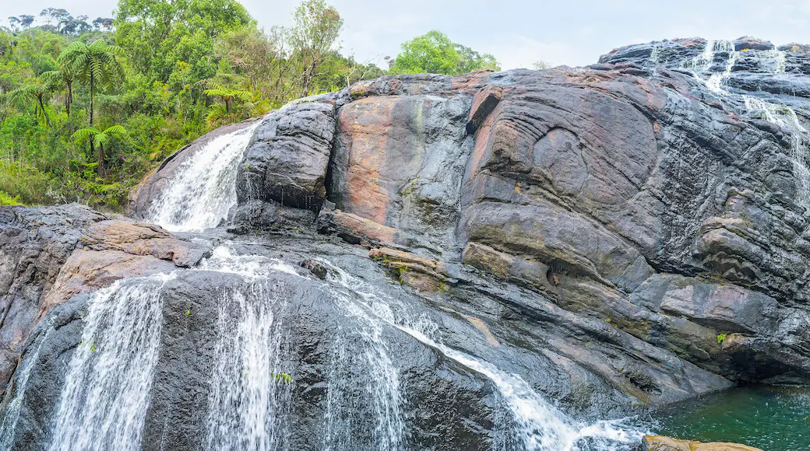
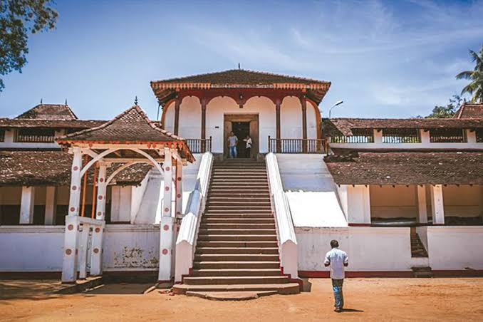
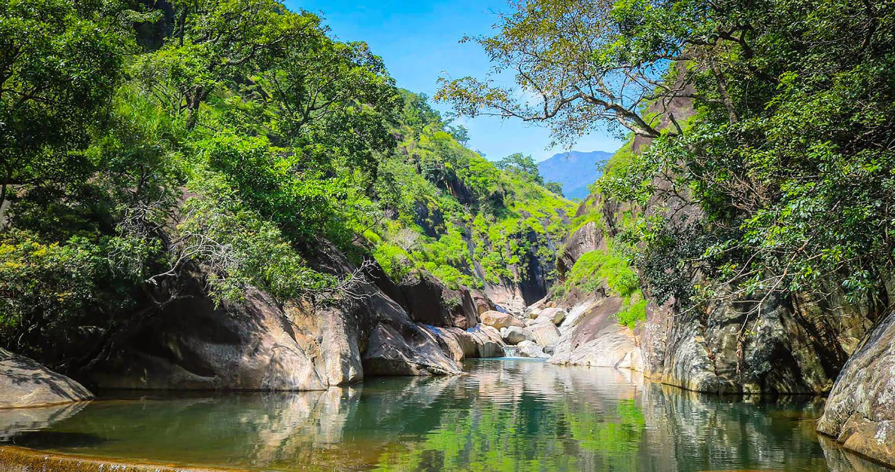
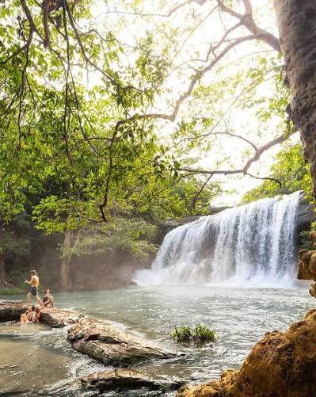

Misty Mountain Peaks
Soaring summits like Sri Pada (Adam's Peak) and Bible Rock offering breathtaking panoramic vistas, cloud forests, and hiking tracks.
Unveil the hidden paradise of Sri Lanka. Sabaragamuwa Province is a breathtaking tapestry of rain-washed hills, ancient forests, and flowing mountain streams.Your journey into nature starts here!

Ratnapura District

Ratnapura City

Belihuloya
A land shaped by ancient kings, emerald wilderness, pristine mountain streams, and centuries of rich Sri Lankan heritage.
Soaring summits like Sri Pada (Adam's Peak) and Bible Rock offering breathtaking panoramic vistas, cloud forests, and hiking tracks.
World famous for blue sapphires and rare gemstones. Ratnapura remains the legendary gem mining capital of South Asia.
Home to the UNESCO-listed Sinharaja Forest Reserve, pristine waterfalls, and rich elephant sanctuaries in Pinnawala.
Deep spiritual roots with historic sanctuaries including Sabaragamuwa Maha Saman Devalaya and revered Buddhist temples.
A quick glance at some of the most sought-after travel locations across Sabaragamuwa.

RatnapuraA picturesque hillside location where wet zone meets dry zone, creating a pristine climate perfect for nature trails.

KuruwitaBopath Ella is a stunning 30-meter waterfall in Sri Lanka famed for its unique Bo-tree leaf shape and the lush, biodiverse rainforest environment that surrounds it.
 Kegalle
Kegalle
an exciting outdoor journey that takes you through the lush rainforests, gushing streams, and rocky gorges surrounding the Kelani River.
 Ratnapura
Ratnapura
Sri Lanka's premier virgin tropical rainforest, boasting unmatched endemic species of birds, flora, and wildlife.